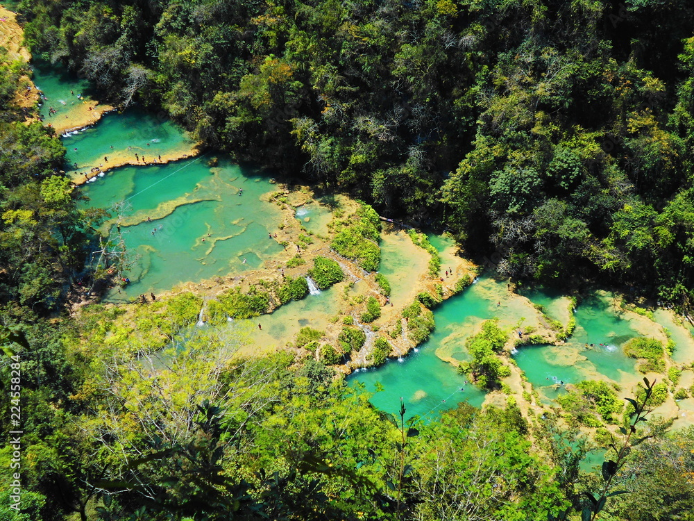
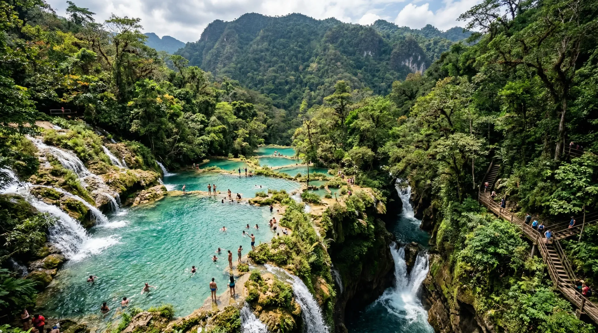
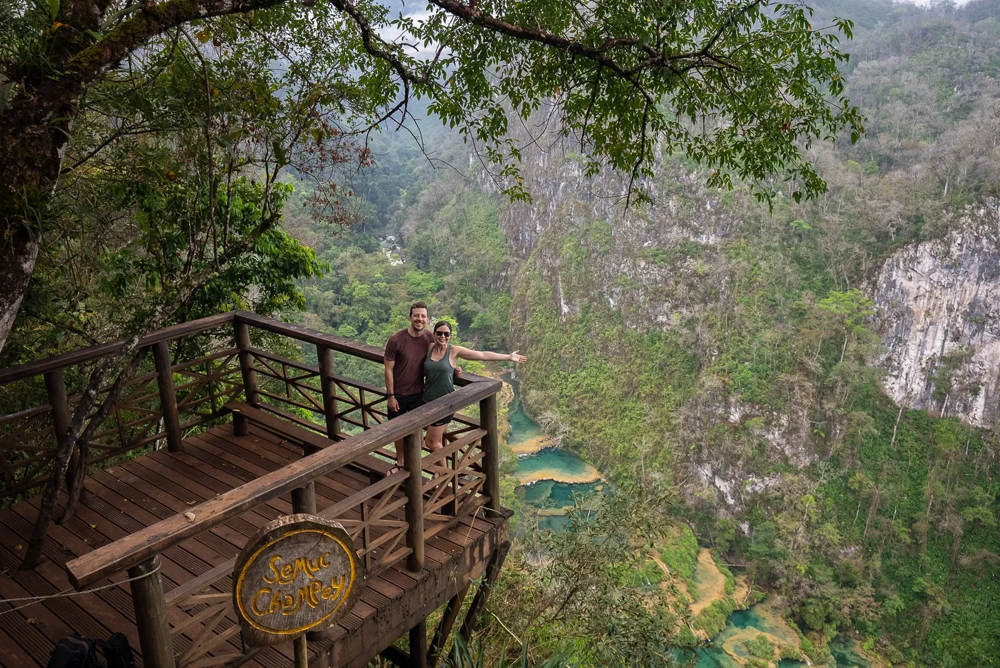
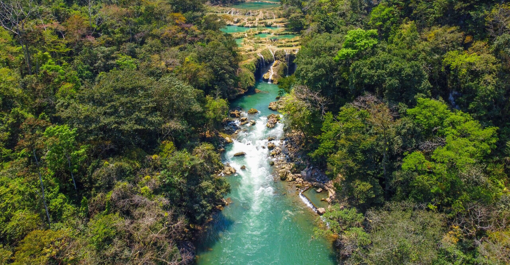

Descripción de Semuc Champey
Semuc Champey es un monumento natural ubicado en el municipio de Lanquín, en el departamento de Alta Verapaz, Guatemala. Es reconocido por sus piscinas naturales de agua color turquesa, rodeadas de vegetación, montañas y bosques tropicales.
Su nombre proviene del idioma q'eqchi' y significa “donde el río se esconde bajo las piedras”.
Entre sus principales atractivos se encuentran las pozas de agua cristalina, el mirador de Semuc Champey, el río Cahabón, las cuevas de K'an Ba y los senderos naturales.
Información general
- Ubicación: Lanquín, Alta Verapaz, Guatemala.
- Tipo de destino: Monumento natural.
- Clima: Tropical, húmedo y cálido.
- Principal atractivo: Piscinas naturales de agua turquesa.
- Duración: Tres días y dos noches.
Galería de imágenes
Haz clic sobre cualquiera de las imágenes para verla en tamaño grande.




Tabla de itinerarios
La excursión tendrá una duración de tres días y dos noches.
| Fecha | Horario | Actividad | Lugar |
|---|---|---|---|
| Viernes 14 de agosto | 5:00 a. m. | Reunión de participantes | Ciudad de Guatemala |
| Viernes 14 de agosto | 5:30 a. m. | Salida hacia Alta Verapaz | Ciudad de Guatemala |
| Viernes 14 de agosto | 1:00 p. m. | Almuerzo y llegada al hospedaje | Lanquín |
| Sábado 15 de agosto | 9:00 a. m. | Caminata hacia el mirador | Semuc Champey |
| Sábado 15 de agosto | 1:30 p. m. | Natación en piscinas naturales | Semuc Champey |
| Domingo 16 de agosto | 8:30 a. m. | Visita a las cuevas de K'an Ba | Lanquín |
| Domingo 16 de agosto | 7:00 p. m. | Finalización de la excursión | Ciudad de Guatemala |
Lista de actividades
Utiliza el buscador para encontrar una actividad.
- Nadar en las piscinas naturales.
- Realizar caminatas por senderos naturales.
- Subir al mirador de Semuc Champey.
- Visitar las cuevas de K'an Ba.
- Realizar tubing en el río Cahabón.
- Tomar fotografías del paisaje.
- Observar diferentes especies de plantas y animales.
- Conocer las comunidades cercanas.
- Comprar artesanías elaboradas por habitantes locales.
- Disfrutar de la gastronomía de Alta Verapaz.
- Realizar recorridos guiados.
- Descansar en las áreas cercanas a las piscinas.
Calculadora de Cotización
Calcula el costo estimado de tu excursión.
Servicios adicionales
Reservación de la excursión
Completa tus datos para registrar una solicitud de reservación.
Opiniones de nuestros visitantes
Recomendaciones para la excursión
Para disfrutar de la excursión se recomienda llevar:
- Ropa cómoda y fresca.
- Traje de baño.
- Zapatos adecuados para caminar.
- Sandalias resistentes al agua.
- Toalla.
- Protector solar.
- Repelente de insectos.
- Gorra o sombrero.
- Botella de agua.
- Dinero en efectivo.
- Bolsa impermeable.
- Medicamentos personales.
Información de la excursión
La excursión incluye transporte, hospedaje, alimentación, entrada al parque y acompañamiento de un guía turístico.
- Destino:
- Semuc Champey, Lanquín, Alta Verapaz.
- Duración:
- Tres días y dos noches.
- Punto de salida:
- Ciudad de Guatemala.
- Costo por persona:
- Q850.00
- Cupos disponibles:
- 30 personas.
Para más información puede comunicarse al 5555-5555 o enviar un correo electrónico a excursiones@miumg.edu.gt .